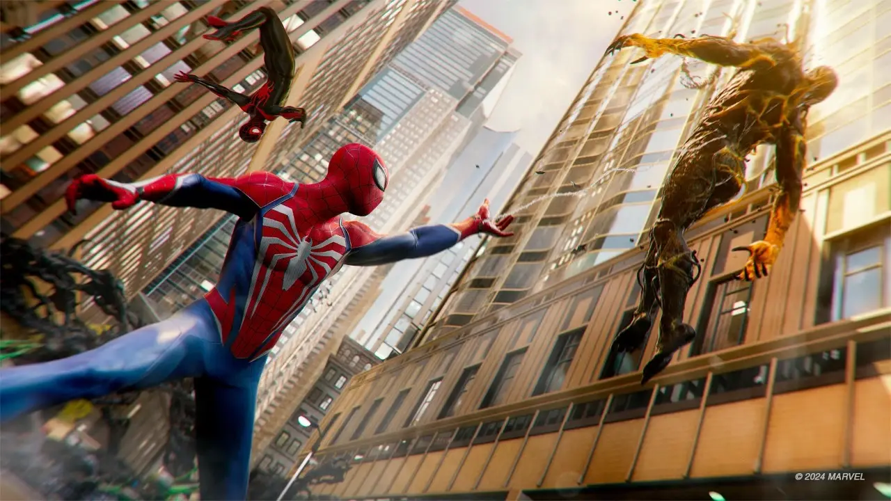
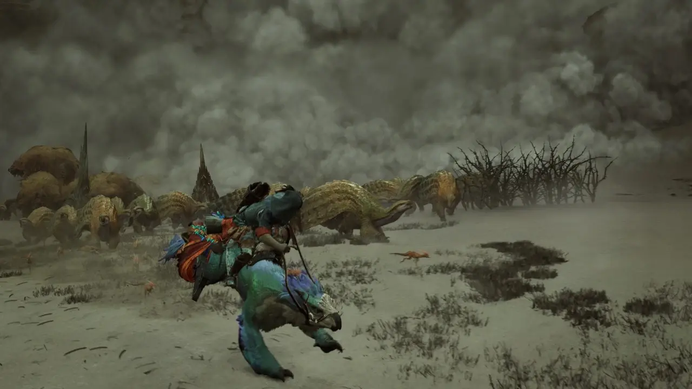
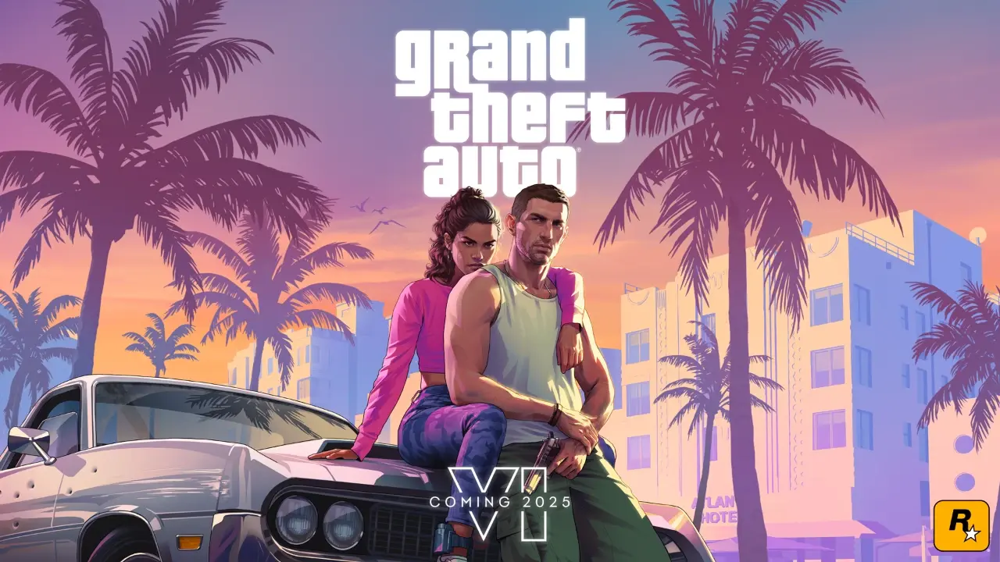

橘清栀夏
随着2025年的脚步日益临近，游戏界的狂欢盛宴也即将拉开序幕。近日，小编为大家整理了一份2025年已确定发售的热门大作清单，每一款都让人期待不已。在这份清单中，不仅有经典系列的最新作品，还有众多创新力作。下面，就让我们一起来了解一下这些令人瞩目的游戏吧！1月10日，《自由战争：复刻版》将带领玩家重温经典，感受不一样的战争魅力。紧接着，1月17日的《真三国无双：起源》和1月30日的《漫威蜘蛛侠2》PC版，将为动作游戏爱好者带来极致的战斗体验。
2月11日，两款大作同日发售，《天国：拯救2》和《文明7》将分别带领玩家领略中世纪战争策略和世界文明发展的魅力。而2月14日的《刺客信条：影》和2月18日的《宣誓》，则为玩家带来了两款风格迥异的游戏体验。紧接着，2月18日的《失落的记录：绽放与愤怒》上集、2月21日的《如龙8外传：夏威夷海盗》和2月28日的《怪物猎人：荒野》将逐一亮相，为玩家带来丰富多彩的游戏世界。
3月份，游戏市场同样热闹非凡。3月4日的《双点博物馆》、3月18日的《失落的记录：绽放与愤怒》下集和3月25日的《指环王：夏尔的传说》将逐一发售，为玩家带来不同类型的游戏体验。此外，还有《原子能降临》、《EternalStrands》、《多重人生》、《沙丘：觉醒》、《杀戮空间3》和《吸血鬼：避世血族2》等多款作品将在2025年初或上半年发售，敬请期待。
当然，最受瞩目的莫过于2025年秋季发售的《GTA6》。这款全球玩家翘首以盼的开放世界动作游戏，必将再次掀起一阵游戏狂潮。总之，2025年无疑是一个值得期待的游戏大年。让我们一起期待这些热门大作的发售，享受游戏带来的无尽欢乐吧！